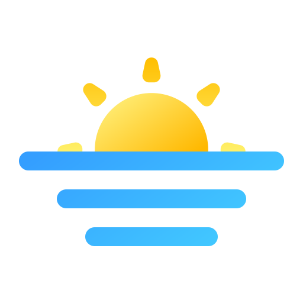
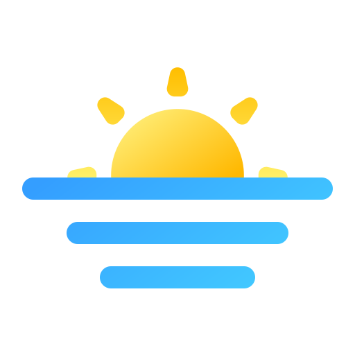

I'm Cristina
Architecture graduate and junior web developer

Sunrise icons created by Christ Design - Flaticon

Sunrise icons created by Christ Design - Flaticon
Persistent and naturally curious architecture graduate looking to start a career in the IT sector. I find this as an opportunity for endless progression and constant challenge in different fields. My background in architecture helps me synthesize abstract ideas into common language and provide solutions based on data. In addition, it has taught me how to work in cross functional teams on multidisciplinary projects and being an active team member.

Certified trilingual professional in Spanish, English, and French, where Spanish is my native language. I have professional proficiency in English and two certifications that support it: B2 Business Vantage and a 106 TOEFL iBT score. In French, I am limited professional proficiency, and my latest certification was the DELF B1 (Diplome d'etudes en langue francaise).

Junior web developer with basic knowledge of HTML and CSS; in the process of learning Javascript.
Please feel free to reach out. Maybe we can learn a new language together!
CONTACT ME


© Cristina Hinojosa